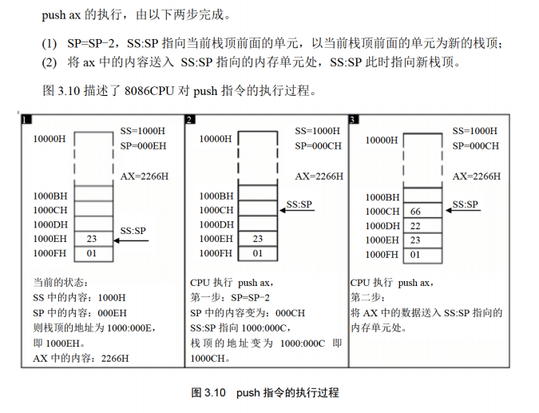
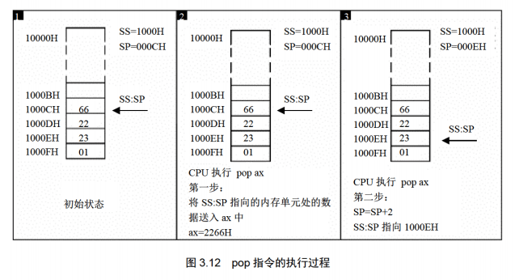
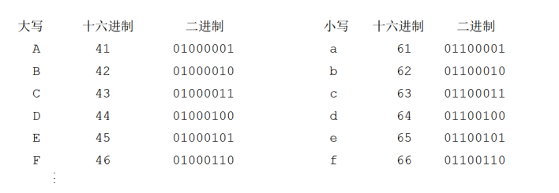
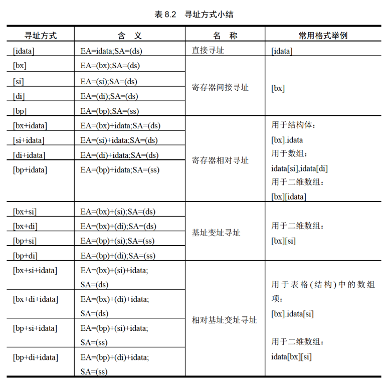
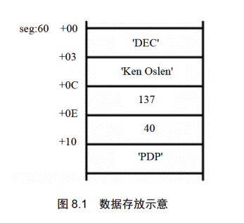
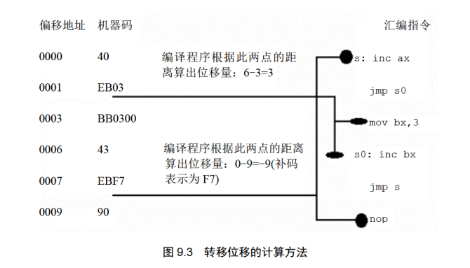
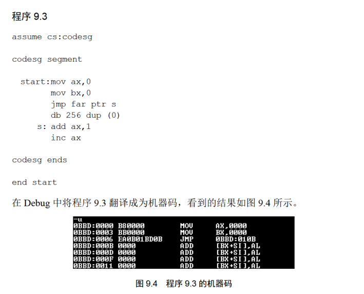
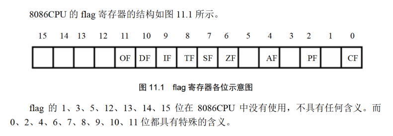
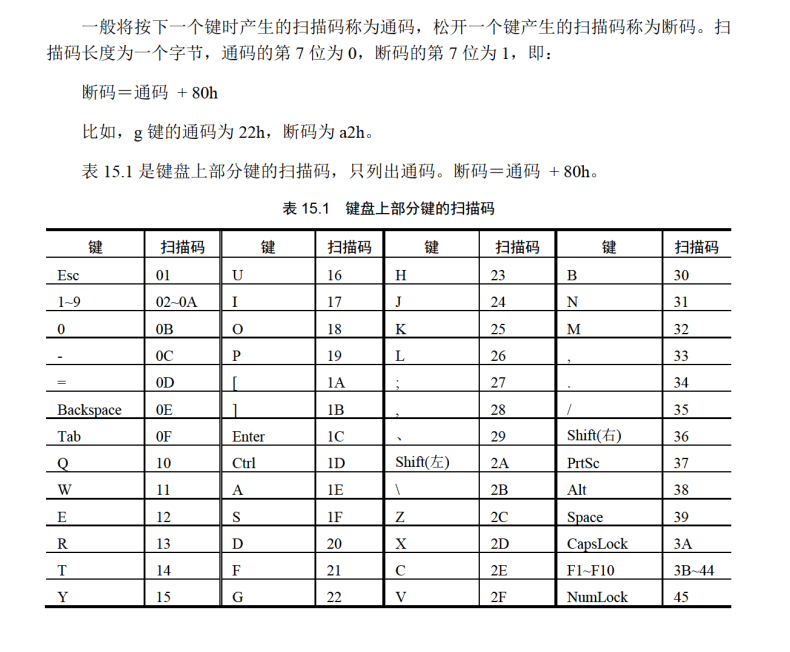
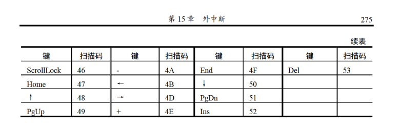

汇编技术
在DEBUG中，使用R命令查看，改变CPU寄存器中的内容
在DEBUG中，使用D命令查看内存中的内容
在DEBUG中，使用E命令改写内存中的内容
在DEBUG中，使用U命令将内存中的机器指令翻译成汇编指令
在DEBUG中，使用T命令执行一条机器指令
在DEBUG中，使用A命令以汇编指令的格式在内存中写入一条机器指令
在DEBUG中，使用g命令将程序执行至某处，例：g 0012
在DEBUG中，使用p命令执行循环
在汇编源程序中，数据不能以字母开头，因此要补0
在汇编程序中，不能直接将内存中的数据直接放入段寄存器中，因此需要如下转换：
1 | mov ax,a |
一共有十四个寄存器（所有寄存器都是16位，能存放两个字节）
AH&AL＝AX(accumulator)：累加寄存器
BH&BL＝BX(base)：基址寄存器
CH&CL＝CX(count)：计数寄存器
DH&DL＝DX(data)：数据寄存器
SP（Stack Pointer）：堆栈指针寄存器
BP（Base Pointer）：基址指针寄存器
SI（Source Index）：源变址寄存器
DI（Destination Index）：目的变址寄存器
IP（Instruction Pointer）：指令指针寄存器
CS（Code Segment）代码段寄存器
DS（Data Segment）：数据段寄存器
SS（Stack Segment）：堆栈段寄存器
ES（Extra Segment）：附加段寄存器
PSW
指令效果：
rep movsb：将ds:si所指地址的一个字节搬移到es:di所指的地址上，移动次数为cx中存放的值
储存单位与数据关系
1Byte=8bit 1字=2字节(Byte) 1KB=1024B(Byte) 1MB=1024KB
基本对应关系：
!>2^地址总线=寻址能力（Byte）
例：一个CPU的寻址能力为8KB，那么它的地址总线的宽度为13（2^13=8*1024）
!>1KB的存储器有1024个存储单元（Byte）（也即可存储8192bits），存储单元的编号从0到1023
!>8080，8088，80286，80386的地址总线宽度分别为16根，20根，24根，32根，则他们的寻址能力为64KB（2^16=64*1024B）,1MB,16MB,4GB
!>数据总线宽度（单位为根）/8记为一次可以传输的数据，以80386为例，其总线宽度为32根，一次可以传送4B数据
寄存器
!>字节型数据(可对应于AH或AL)占一单元，字型数据(可对应于AX)占两单元
cs是值cpu执行的当前指令的段地址，ds是数据开始的段地址。(均不能直接赋值，需间接赋值如: mov ax,1000H mov ds,ax)
CS是告诉CPU，去哪个位置找内容当成指令去执行；
DS是告诉CPU，去哪个位置找内容当成数据被使用。
CS和IP读取指令的变化：
| 内存地址 | 机器码 | 汇编指令 |
|---|---|---|
| 1000:0 | b8 00 00 | mov ax,0 |
| 1000:3 | e8 01 00 | call s |
| 1000:6 | 40 | inc ax |
| 1000:7 | 58 | s:pop ax |
1.读取第一条指令后IP=3，执行完该指令后IP=3
2.读取第二条指令后IP=6（自动读取下一条指令），所以IP=6入栈，执行完指令后IP=7
3.最后POP后，ax=6
栈
任何时刻，SS:SP指向栈顶元素=SS:SP指向栈空间最高地址单元的下一个单元
push入栈指令：

pop出栈指令：

栈顶超界问题：
8086CPU不保证我们对栈的操作不会超界，它只考虑当前的情况，当前的栈顶在何处，当前要执行的指令是哪一条
对于栈的处理命令(push,pop)本质上是对内存的传送指令
因此一下代码等价：
直接访问内存单元：
1 | mov ax,1000H |
使用栈段寄存器访问：
1 | mov ax,1000H |
一个栈段最大可以设FFFFH，最大容量为64KB
详细区分push和pop:
push:
以下代码为例：
1 | mov ax,1000H 令寄存器ax为1000H |
pop:
以下代码为例：
1 | mov ax,2000H 令寄存器ax为2000H |
连接与运行程序
首先将文件保存为.asm格式，进入dosbox，然后输入
也可以保存为txt，但此时需要输入全名
1 | masm xxx.asm 或 masm xxx.txt |
[bx]和loop指令
[bx]表示一个内存单元
mov al,[bx]，即将一个内存单元的内容送入al，这个内存单元的长度为1字节，偏移地址在bx中，段地址在ds中
()的应用如下：
1 | 1.(ax)=0010H： 表示ax中的内容为0010H |
约定符号idata表示常量
可以使用mov [bx],xx往ds:[bx]中输入数据，但是只能使用[bx]不能替换成[ax]
使用loop进行循环计算：
设置cx为需要循环的次数
1 | assume cs:codesg |
区别以下汇编源程序指令的含义：
mov [0],xxh ，含义：错误不能将数赋值给另一个数
mov al,[0] , 含义：(al)=0,将常量送入al中
mov al,ds:[0] , 含义：(al)=(ds)*16+0,将内存单元中的数据送入al
mov al,[bx] , 含义：(al)=(ds)*16+bx,将内存单元中的数据送入al
mov al,ds:[bx] , 含义：(al)=(ds)*16+bx,将内存单元中的数据送入al
包含多个段的程序
使用start获知编译器程序的入口
1 | assume cs:codesg |
在段的结尾需要写：
xxx ends
区别于end,ends用在每一段结尾
可以使用如下代码将各类数据分类：
1 | assume cs:code,ds:data,ss:stack |
需注意，即使使用了assume cs:code,ds:data,ss:stack代码仍需定义ds,ss
内存地址方法
and 指令：逻辑与运算，同为1则置1，其余置0
mov al,01100011b
and al,00111011b
结果为al:00100011b
or 指令：逻辑或运算，有1则置1，其余置0
mov al,01100011b
or al,00111011b
结果为al:01111011b
以字符形式给出的数据
1 | assume cs:code,ds:data |
在以上程序中“db’unIX’”相当于“db 75H,6EH,49H,58H”，为其对应的ASCII码。
大小写转换：
“A”的ASCII码是41H，“a”的ASCII码是61H，因此改变一个字母的大小写改变其对应的ASCII码即可。

同样的如果仅用目前的知识可以这样考虑：大写字母的ASCII码的第五位（从右往左数从第0位开始）是0，小写字母的第五位位1。因此通过改变第五位的数字就可以改变字母大小写。
1 | assume cs:codesg,ds:datasg |
[bx+idata]
可以使用[bx+idata]表示一个内存单元,偏转地址为(bx)+idata
mov ax,[bx+200]表示将内存单元中的内容送入ax，这个内存单元的长度位2个字节，存放一个字，偏移地址为bx中的数值加上200，段地址在ds中。即(ax)=((ds)*16+(bx)+200)
mov ax,[200+bx]=mov ax,200[bx]=mov ax,[bx].200
因此以上的程序可以这样改写：
1 | assume cs:codesg,ds:datasg |
SI和DI
si和di是与bx功能相近的寄存器，si和di不能够分成两个8位寄存器来使用。
以下指令实现了相同的内容：
1.mov bx,0
mov ax,[bx]
2.mov si,0
mov ax,[si]
3.mov di,0
mov ax,[di]
1.mov bx,0
mov ax,[bx+123]
2.mov si,0
mov ax,[si+123]
3.mov di,0
mov ax,[di+123]
用si和di实现将字符串’welcome to masm!’复制到它后面的数据区中。
1 | assume cs:codesg,ds:datasg |
1 | codesg segment |
[bx+si]和[bx+di]
两式含义近似，以[bx+si]为例，其表示一个内存单元，他的偏移地址为(bx)+(si)
mov ax,[bx+si]表示：将内存单元中的内容送入ax，这个内存单元的长度位2个字节，存放一个字，偏移地址为bx中的数值加上si中的数值，段地址在ds中。即(ax)=((ds)*16+(bx)+(si))
也可以写为mov ax,[bx][si]
同样的可以理解mov ax,[bx+si+idata]
可以写为mov ax,[bx+200+si]
mov ax,[200+bx+si]
mov ax,200[bx][si]
mov ax,[bx].200[si]
mov ax,[bx][si].200
双重循环与loop计数器
在使用双重循环时，如果只用一个循环计数器，会造成内层循环时，覆盖了外层循环的循环计数值。因此在内层循环开始时，先将外层循环保存，在执行外层循环的loop指令前，再恢复外层循环的cx数值。以下为使用寄存器dx来保存cx中的数值：
1 | mov ax,datasg |
当然也可以使用内存来保存数据cx
1 | mov ax,datasg |
最好是使用栈暂存数据
1 | assume cs:codesg,ds:datasg,ss:stacksg |
数据处理的两个基本问题
1.处理的数据在什么地方
2.要处理的数据有多长
且对寄存器和段寄存器予以定义：
reg：ax，bx，cx，dx，ah，al，bh，bl，ch，cl，dh，dl，sp，bp，si，di
sreg：ds，ss，cs，es
只有四个寄存器能使用“[]”进行内存单元的寻址分别为：bx，si，di，bp
以下指令有效：
mov ax,[bx]
mov ax,[bx+si]
mov ax,[bx+di]
mov ax,[bp]
mov ax,[bp+si]
mov ax,[bp+di]
[cx]，[ax]，[dx]，[ds]等指令均为错误指令
但对四个段寄存器只能以以下四种形式出现：bx和si，bx和di，bp和si，bp和di
例如：
mov ax,[bx+si+idata]
mov ax,[bp+di+idata]
但以下指令错误：
mov ax,[bx+bp]
mov ax,[si+di]
需要注意的是：在[]中使用寄存器bp，而指令中没有显性地给出段地址，段地址默认在ss中
mov ax,[bp+si+idata] = (ax)=((ss)*16+(bp)+(si)+idata)
绝大部分机器指令都是进行数据处理的指令，处理大致可分为3类：读取，写入，运算。
指令在执行前，所要处理的数据可以在3个地方：CPU内部，内存，端口
汇编语言中数据位置的表达
1.立即数(idata)
对于直接包含在机器指令中的数据（执行前在CPU的指令缓冲器中），在汇编语言中称为立即数。
1 | 例： |
2.寄存器
指令要处理的数据在寄存器中，在汇编指令中给出相应的寄存器名。
1 | 例： |
3.段地址(SA)和偏移地址(EA)
指令要处理的数据在内存中，在汇编指令中可用[x]的格式给出EA,SA在某个段寄存器中。存放段地址的寄存器可以是默认的，比如：
1 | mov ax,[0] |
1 | mov ax,[bp] |
1 | 存放段地址的寄存器也可以是显性给出的 |
寻址方式

指令要处理的数据长度
8086处理器中可以处理两种尺寸的数据，byte和word。因此要给出需要处理的数据的尺寸。
1.通过寄存器名指明要处理的数据尺寸
例如：存储器指明字操作
1 | mov ax,1 |
存储器指明字节操作
1 | mov al,1 |
2.在没有就寄存器名存在的情况下，用操作符Xptr指明内存单元的长度，X在汇编指令中可以为word或byte。
例如：下面的指令中用word ptr指明了指令访问的内存单元是一个字单元
1 | mov word ptr ds:[0],1 |
下面的指令用byte ptr指明了指令访问的内存单元是一个字节单元
1 | mov byte ptr ds:[0],1 |
3.使用push 指令时不需要指明访问的是字单元还是字节单元，因为push指令只进行字操作。
寻址方式应用

1.需要将排名改为38位
2.收入增加70亿元
3.著名产品变更为VAX系列计算机
1 | mov ax,seg |
div指令
使用div除法指令时需要注意以下问题：
1.除数：有8位和16位两种，在一个reg或内存单元中
2.被除数默认存放在AX或DX和AX中，如果除数为8位，被除数则为16位，默认在AX中存放：如果除数为16位，被除数则为32位，在DX和AX中存放，DX存放高16位，AX存放低16位。
3.结果：如果除数为8位，则AL存储除法操作的商，AH存储除法操作的余数；如果除数为16位，则AX存储除法操作的商，DX存储除法操作的余数。
div byte ptr ds:[0]
表示(al)=(ax)/((ds)*16+0)的商
(ah)=(ax)/((ds)*16+0)的余数
div word ptr es:[0]
表示(ax)=[(dx)*10000h+(ax)]/((es)*16+0)的商
(dx)=[(dx)*10000h+(ax)]/((es)*16+0)的余数
编程计算100001/100的思路
被除数100001大于65535因此用dx和ax两个寄存器联合存放100001，因此要进行16位的除法。除数100小于255，因此可以用8位寄存器存放。但被除数是32位，除数应为16位，所以要用一个16位寄存器来存放除数100。
100001=186a1h
mov dx,1
mov ax,86a1h
mov bx,100
div bx
程序执行后，商(ax)=03e8h，余数(dx)=1
对于编程计算1001/100
mov ax,1001
mov bl,100
div bl
程序执行后，商(ax)=0ah，余数(ah)=1
伪指令dd
前面曾使用db和dw定义字节型数据和字型数据。dd用来定义双字型数据。
1 | data segment |
表示在data段中定义了三个数据：
第一个数据为01h，在data:0处，占1个字节
第二个数据为0001h，在data:1处，占一个字
第三个数据为00000001h，在data:3，占两个字
dup
dup是一个操作符，在汇编语言中同db,dw,dd一样，也是由编译器识别处理的符号。他适合db,dw,dd等数据定义伪指令配合使用的，用来进行数据的重复。
db 3 dup (0)
定义了3个字节，他们的值都是0，相当于db 0,0,0
db 3 dup (1,2,3)
定义了9个字节，他们是0,1,2,0,1,2,0,1,2，相当于db 0,1,2,0,1,2,0,1,2
db 3 dup (‘abc’,’ABC’)
定义了18个字节，他们是’abcABCabcABCabcABC’，相当于db ‘abcABCabcABCabcABC’
dup的使用格式：
db 重复的次数 dup (重复的字节型数据)
dw 重复的次数 dup (重复的字型数据)
dd 重复的次数 dup (重复的双字型数据)
因此在定义一个200字节的栈段时，可以通过dup化简程序
1 | stack segment |
转移指令原理
可以修改IP或者同时修改CS:IP的指令称为转移指令。
只修改IP时，称为段内转移，比如：jmp ax
同时修改CS和IP时，称为段间转移，比如：jmp 1000:0
段内转移又分为：短转移和近转移
短转移IP的修改范围为-128~127
近转移IP的修改范围为-32768~32767
转移指令分类：
1.无条件转移指令：jmp
2.条件转移指令
3.循环指令
4.过程
5.中断
操作符offset
操作符offset再汇编语言中是由编译器处理的符号，他的功能是取得标号的偏移地址。
1 | assume cs:codesg |
在上面的程序中offset取得了符号start和s的偏移地址0和3，所以指令可以分别等价于mov ax,0;mov ax,3
nop指令对应的机器码占一个字节
jmp指令
jmp为无条件转移指令，可以只修改IP，也可以同时修改CS和IP
jmp指令要给出两个信息：
1.转移的目的地址
2.转移的距离
jmp short 标号（转到标号处执行指令）
这种格式的jmp指令实现的时段内短转移，它对IP的修改范围为-128~127，也就是说，向前最多可以越过128个字节，向后转移最多越过127个字节。short说明指令进行的是短转移。标号指明指令要转移的地址，转移指令结束后CS:IP指向标号处的指令。
1 | assume cs:codesg |
程序值进行一次ax+1操作，此处jmp short s对应于机器码EB03，此机器码中不含转移的目标地址。因此说明CPU在执行jmp指令的时候并不需要转移的目的地址。
jmp short s的指令读取和执行过程：
1.(CS)=0BBDH,(IP)=0006H,CS:IP指向EB03（对应的机器码）
2.读取指令码EB03进入指令缓冲器
3.(IP)=(IP)+所读取指令的长度=(IP)+2=0008H，CS:IP指向add ax,1
4.CPU执行指令缓冲器中的指令EB 03；
5.指令EB03执行后，(IP)=000BH，CS:IP指向inc ax
使用相对位移计算得到的机器码：

“jmp short 标号”的功能：(IP)=(IP)+8位位移
1：8位位移=标号处地址jmp指令后的第一个字节的地址；
2：short指明此处的位移为8位位移；
3：8位位移的范围为-128~127，用补码表示；
4：8位位移由编程程序在编译时算出。
“jmp near ptr 标号”的功能为：(IP)=(IP)+16位位移
1：16位位移=标号处的地址jmp指令后的第一个字节的地址；
2：near ptr指明此处的位移为16位位移，进行的是段内近转移；
3：16位位移的范围为-32768~32767，用补码表示；
4：16位位移由编程程序在编译时算出。
在“jmp far ptr 标号”中实现的是段间转移，又称远转移。
(CS)=标号所在段的段地址；(IP)=标号在段中的偏移地址。

转移指令jmp与内存
1.“jmp word ptr 内存单元地址”（段内转移）
功能：从内存单元地址处存放着一个字，是转移的目的偏移地址。
1 | mov ax,0123h |
执行后(IP)=0123h
1 | mov ax,0123h |
执行后(IP)=0123h
2.“jmp dword ptr 内存单元地址”（段间转移）
功能从内存单元地址处开始存放着两个字，高地址处的字是转移的目的段地址，低地址是转移的目的偏移地址。
(CS)=(内存单元地址+2)
(IP)=(内存单元地址)
1 | mov ax,0123h |
执行后：(CS)=0，(IP)=0123H，CS,IP指向0000：0123
1 | mov ax,0123h |
执行后：(CS)=0，(IP)=0123H，CS,IP指向0000：0123
jcxz与loop指令
jcxz指令为有条件转移指令，所有的有条件转移指令都是短转移，在对应的机器码中包含转移的位移，而不是目的地址。对IP的修改范围都为：-128~127。
指令格式：jcxz 标号（如果（cx）=0，转移到标号处执行）
if((cx)==0):jmp short 标号
loop指令为循环指令，所有的循环指令都是短转移，在对应的机器码中包含转移的位移，而不是目的地址。对IP的修改范围都为：-128~127。
指令格式：loop 标号（（cx）=（cx）-1），如果(cx)!=0，转移到标号处执行
(cx)–;
if ((cx)!=0):jmp short 标号；
call和ret指令
CPU执行ret指令，进行下面两步操作：
1.(IP)=((SS)*16+(SP))
2.(SP)=(SP)+2
相当于pop IP(获得数据)
CPU执行retf指令时，进行下面四步操作：
1.(IP)=((SS)*16+(SP))
2.(SP)=(SP)+2
3.(CS)=((SS)*16+(SP))
4.(SP)=(SP)+2
相当于pop IPpop CS
以下程序执行完之后，CS:IP指向代码段的第一条指令
1 | assume cs:code |
依据位移转移的call指令
CPU执行此种格式的“call指令（call 标号）”时，进行如下操作：
1.(sp)=(sp)-2
((ss)*16+(sp))=(IP)
2.(IP)=(IP)+16位位移
16位位移的范围位-32768-32767，用补码表示；
16位位移由程序在编译时算出
“call 标号”等价于：
push IP
jmp near ptr
对检测点10.2的解释：
1.读取第一条指令后IP=3，执行完该指令后IP=3
2.读取第二条指令后IP=6（自动读取下一条指令），所以IP=6入栈，执行完指令后IP=7
3.最后POP后，ax=6
“call far ptr”实现的是段间转移
CPU执行此格式的call指令后，进行如下操作：
1.(sp)=(sp)-2
((ss)*16+(sp))=(cs)
(sp)=(sp)-2
((ss)*16+(sp))=(ip)
2.(CS)=标号所在段的段地址
(IP)=标号所在段中的偏移地址
“call far ptr”等价于：
push CS
push IP
jmp far ptr 标号
call指令与寄存器
“call 16位 reg”功能：
(sp)=(sp)-2
((ss)*16+(sp))=(ip)
(ip)=(16位reg)
相当于：
push ip
jmp 16位 reg
转移地址在内存中的call指令格式：
1.call word ptr 内存单元地址
相当于：
push IP
jmp word ptr 内存单元地址
2.call dword ptr 内存单元地址
相当于：
push cs
push IP
jmp dword ptr 内存单元地址
下面指令：
1 | mov sp,10h |
执行完，(CS)=0，(IP)=0123h，(sp)=0ch
放入CS,IP后从内存单元地址读入CS和IP
mul指令
乘法指令：两个数相乘只能是均为8位或均为16位
1.均为8位：一个默认放在AL中，另一个放在reg或内存单元中，结果默认存在AX中
1 | mov al,100 |
(ax)=1000(03E8)H
2.均为16位：一个默认存在AX中，另一个存放在16位reg或内存字单元中，结果高位存在DX中，低位在AX中
1 | mov ax,100 |
(ax)=4240H，(dx)=000FH
标志寄存器
13个寄存器：ax,bx,cx,dx,si,di,bp,sp,ip,cs,ss,ds,es

ZF标志
flag的第六位是ZF，零标志位。他记录相关指令执行后，结果是否为0。如果结果为0，那么zf=1；如果结果不为0，那么zf=0
1 | mov ax,1 |
PF标志
flag的第二位是pf，奇偶标志位。他记录相关指令执行后，其结果的所有bit位中1的个数是否为偶数。如果1的个数为偶数，pf=1，如果为奇数，那么pf=0
1 | mov al,1 |
SF标志
flag的第七位是sf，符号标志位。他记录相关指令执行后，其结果是否为负。如果结果为负，sf=1，如果非负，那么sf=0
计算机用补码表示有符号数据。计算机中的一个数据既可看作是有符号数，也可以看成是无符号数。
对同一个二进制数据，计算机可以将其作为有符号数或无符号数运算。
1 | mov al,10000001b |
1 | mov al,10000001b |
1 | mov al,10000001b |
CF标志
flag的第0位是cf，进位标志位。一般的，在进行无符号数运算时，他记录运算结果的最高有效位向更高位的进位值，或更高位的错位值。
对于位数为N的无符号数而言，其对应的二进制信息的最高位，即N-1位，即最高有效位 。假想的更高位则是最高位+1位。
当两个数据相加时，有可能产生从最高有效位向更高位的进位，这个进位值会用CF位进行记录。
1 | mov al,98h |
当两个数据做减法时，有可能向更高位借位。比如，两个8位数据：97H-98H，将产生借位，借位后，相当于计算197H-98H。而CF位会用来记录这个错位值。
1 | mov al,97h |
OF标志
flag的第11位是OF，溢出标志位。一般情况下，他记录有符号数运算的结果是否发生了溢出。区别于CF，OF是对有符号数运算有意义的标志位。
1 | mov al,98 |
执行完之后：CF=0,OF=1，还需要用SF位记录结果的符号，对于无符号数，98+99没有进位，CF=0;对于有符号数运算，98+99发生溢出，OF=1
adc指令
adc是带进位加法指令，它利用了cf位上记录的进位值。
指令格式：adc 操作对象1，操作对象2
功能：操作对象1=操作对象1+操作对象2+CF
1 | mov ax,2 |
(ax)=(ax)+1+CF=2+1+1=4
add ax,bx等价于
add al,bl
adc ah,bh
计算 1EF0001000H+2010001EF0H,结果放在ax（高16位）和bx（低16位）。
1 | mov ax,001eh |
sbb指令
sbb是带错位减法指令，它利用了CF位上记录的错位值。
指令格式：sbb 操作对象1，操作对象2
功能：操作对象1=操作对象1-操作对象2-CF
计算003e1000h-00202000h，结果放在ax,bx中。
1 | mov bx,1000h |
cmp指令
cmp是比较指令，cmp相当于减法指令，但不保存结果。执行完后，会对标志寄存器产生影响。
1 | mov ax,8 |
执行后：(ax)=8,zf=0,pf=1,sf=0,cf=0,of=0
对于无符号数可以通过标志位判断数值比较结果
如果zf=1,ax=bx
zf=0,ax!=bx
cf=1,ax<\bx
cf=0,ax>=bx
cf=0并且zf=0，说明ax>bx
cf=1或zf=1，说明ax<=bx
对有符号数的判定
1.如果sf=1，而of=0：
of=0说明没有溢出，逻辑上真正结果的正负=实际结果的正负
sf=1实际结果为负，所以逻辑上真正的结果为负，所以(ah)<(bh)
2.如果sf=1，而of=1：
of=1说明有溢出，逻辑上真正结果的正负!=实际结果的正负
sf=1实际结果为负，故是因溢出导致了实际结果为负，因此逻辑上的真正结果为正(ah)>(bh)
3.如果sf=0，而of=1：
of=1说明有溢出，逻辑上真正结果的正负!=实际结果的正负
sf=0，实际结果非负，而of=1说明是因溢出导致实际结果为正，那么逻辑上真正的结果为负(ah)<(bh)
4.如果sf=0，而of=0：
of=0说明没有溢出，逻辑上真正结果的正负=实际结果的正负
sf=0，实际结果非负，所以逻辑上真正的结果非负，所以(ah)>=(bh)
根据无符号数的比较结果进行转移的条件转移指令
| 指令 | 含义 | 检测的相关标志位 |
|---|---|---|
| je | 等于则转移 | zf=1 |
| jne | 不等于则转移 | zf=0 |
| jb | 低于则转移 | cf=1 |
| jnb | 不低于则转移 | cf=0 |
| ja | 高于则转移 | cf=0且zf=0 |
| jna | 不高于则转移 | cf=1且zf=1 |
有符号数：
JG 被减数大于减数
JGE 被减数大于或等于减数
JL 被减数小于减数
JLE 被减数小于于或等于减数
DF标志和串传送指令
flag的第十位是DF，方向标志位。在串处理指令中，控制每次操作后si，di的增减。
df=0 每次操作后si，di递增
df=1 每次操作后si，di递减
格式：movsb
功能：执行movsb指令相当于进行下面操作（逐字节传送）
1.((es)*16+(di))=((ds)*16+(si))
2.如果df=0，则：(si)=(si)+1 ；(di)=(di)+1
如果df=1，则：(si)=(si)-1 ；(di)=(di)-1
格式：movsw
功能：执行movsb指令相当于进行下面操作（逐字传送）
1.((es)*16+(di))=((ds)*16+(si))
2.如果df=0，则：(si)=(si)+2 ；(di)=(di)+2
如果df=1，则：(si)=(si)-2 ；(di)=(di)-2
movsb和movsw配合使用：
rep movsb
功能：
s:movsb
loop s
rep根据cx的值，重复执行后面的串传送指令。因此实现循环实现(cx)个字符的传送。
以下展示课本用法：
变成将data段中的第一个字符串复制到它后面的空间中。
1 | data segment |
传送的原始位置：data:0;
传送的目的位置：data:0010;
传送的长度：16；
传送的方向，正向传送，因此 设置df=0(cld)；
ps:若反向传送，设置df=1(std)
1 | mov ax,data |
pushf和popf
执行操作: SP=SP-1,(SP)=PSW的高8位, SP=SP-1, (SP)=PSW的低8位
内中断
中断向量表
中断向量表在内存中保存，存放着256个中断源对应的中断处理程序入口。
对于8086pc机，中断向量表指定放在内存地址0处。从内存0000:0000到0000:03FF的1024个单元中存放着中断向量表。
每个中断向量占两个字，高地址字段存放段地址，低地址字段存放偏移地址。
因此n号中断源对应的中断程序入口的偏移地址值的内存单元地址为4*N，段地址为4*N+2。
中断过程
1.取得中断类型码N；
2.pushf
3.TF=0,IF=0
4.push CS
5.push IP
6.(IP)=(N*4),(CS)=(N*4+2)
iret指令
iret指令和硬件完成的中断过程配合使用。执行iret指令后，CPU回到执行中断处理程序之前的执行点继续执行。(在正常中断中不使用，在自定义中断时，需要写入以实现返回)
iret作用：
pop IP
pop CS
popf
除法中断与输出
1 | assume cs:code |
int指令
int指令的格式为：int n，n为中断类型码，用于引发中断。
CPU执行int n指令，相当于印发一个n号中断。过程如下（IF为中断标志，1允许，0禁止）
1.取中断类型码n;
2.标志寄存器入栈，IF=0,TF=0;
3.CS,IP入栈;
4.(IP)=(n*4),(CS)=(n*4+2)
供应用程序调用的中断例程
编写，安装中断7ch的中断程序
1.求word型数据的平方，ax=要计算的数据，返回值：在dx,ax中存放高16位和低16位
例：求2*3456^2
进程：
1 | assume cs:code |
实例：
1 | assume cs:code |
对int,iret和栈的深入理解
使用7ch中断例程完成loop指令的功能：
设计分析：loop s的执行需要两个信息，循环次数和到s的位移。因此使用cx存放循环次数，用bx存放位移
应用实例：在屏幕中间显示80个”!”
1 | assume cs:code |
int 7ch指令功能分析：
1：dec cx;
2：如果(cx)!=0，转到标号s处执行，否则向下执行；
转到标号执行需要将(cs)设置为标号s的段地址，(ip)设置为标号s的偏移地址；
在引发中断过程后，当前标志寄存器，cs和ip都要压栈，此时压入的cs和ip中的内容，是调用程序的段地址(标号s的段地址)和int 7ch后一条指令的偏移地址(标号se的偏移地址)
因此，使用标号se的偏移地址加上bx中存放的转移位移就可以得到标号s的偏移地址。中断例程如下：
1 | 1p: |
因为使用了bp在程序开始处将bp入栈保存，结束时出栈恢复。栈中位置：顶部是原来bp的数值；下面是se的偏移地址；再下面是s的段地址；再下面是标志寄存器的值。因此将[bp+2]位置的值加上偏移地址，实现跳转。
bios和dos的中断例程
1.开机后cpu加电，初始化(cs)=0FFFFH，(IP)=0，自动从FFFF:0单元开始执行程序。FFFF:0处有跳转指令，CPU执行该指令后，转去执行bios中的硬件系统检测和初始化程序
2.初始化程序将建立bios所支持的中断向量，即将bios提供的中断例程的入口地址登记在中断向量表中。(bios的中断例程固化在ROM中)
3.硬件系统检测和初始化完成后，调用int 19h进行操作系统的引导。然后将计算机交由操作系统控制。
4.DOS启动后，除完成其他工作外，还将它所提供的中断例程装入内存，并建立相应的中断向量
端口
CPU可以直接读写3个地方的数据：
1.CPU内部的寄存器；
2.内存单元；
3.端口；
端口的读写
访问端口时，CPU通过端口地址来定位端口，端口和内存地址一样，通过地址总线来传送。在PC系统中CPU最多可以定位64KB个不同的端口。端口的范围是0-65535
shl和shr指令
shl和shr是逻辑移位指令。
shl是逻辑左移指令，功能为：
1.将一个寄存器或内存单元中的数据向左移位；
2.将最后移出的一位写入CF中；
3.最低位用0补充
指令：
mov al,01001000b
shl al,1
结果：(al)=10010000b，CF=0
如果移动位数大于1，须将移动位数放在cl中：
mov al,01010001b
mov cl,3
shl al,cl
执行后(al)=10001000b，因为最后移出的一位是0，所以CF=0
shl是逻辑右移指令，功能为：
1.将一个寄存器或内存单元中的数据向右移位；
2.将最后移出的一位写入CF中；
3.最高位用0补充
指令：
mov al,10000001b
shr al,1
结果：(al)=01000000b，CF=1
如果移动位数大于1，须将移动位数放在cl中：
mov al,01010001b
mov cl,3
shr al,cl
执行后(al)=00001010b，因为最后移出的一位是0，所以CF=0
外中断
外中断：用于处理外部设备，接收输入，并且输出
外中断信息
在PC系统中，外中断源一共有一下两类
1.可屏蔽中断：
CPU可以不响应此类中断。CPU是否响应取决于标志寄存位的IF位设置。当CPU检测到可屏蔽中断信息时，如果IF=1，则CPU在执行完当前指令后响应中断，引发中断过程，如果IF=0，则不响应可屏蔽中断
内中断引发的中断过程：
1.取中断类型码n；
2.标志寄存器入栈，IF=0，TF=0;
3.CS,IP入栈；
4.(IP)=(N*4)，(CS)=(n*4+2)
我们可以手动设置IF指令：
sti，设置IF=1
cli，设置IF=0
2.不可屏蔽中断：
不可屏蔽中断是CPU必须响应的外中断。当CPU检测到不可屏蔽中断信息时，则在执行完当前指令后，立即响应，引发中断过程。
不可屏蔽中断的过程：
1.标志寄存器入栈，IF=0，TF=0;
2.CS,IP入栈；
3.(IP)=(8)，(CS)=(0AH)
所有由外设引发的外中断都是可屏蔽中断，当外设有需要处理的事件发生时，相关芯片向CPU发出可屏蔽中断信息。
PC机键盘的处理过程
1.键盘输入
键盘上每一个键相当于一个开关，按下一个键时，开关接通，该芯片产生扫描码并将其送入主板上的相关接口，该寄存器端口地址为60H


2.引发9号中断
键盘输入到达60h端口时，相关的芯片就会向CPU发出中断类型码为9的可屏蔽中断信息。CPU检测到相关信息后如果IF=1，则响应中断，引发中断过程，转去执行int9中断例程
bios提供了int9中断例程，用来处理基本的键盘输入处理：
1.读出60h端口中的扫描码；
2.如果是字符键的扫描码，将该扫描码和它所对应的字符码(ASCII码)送入内存中的bios键盘缓冲区；如果是控制键(CTRL一类)和切换键(CAPSLOCK一类)的扫描码，则将其转变为状态字节(二进制记录)写入内存中的存储状态字节的单元。
3.对键盘系统进行控制，向相关芯片发出应答信息。
在bios内存区中可以存储15个键盘输入，因为int9中断例程除了接收扫描码外，还产生和扫描码对应的字符码。因此在bios键盘缓冲区中，一个键盘输入用一个字单元存放，高位字节存放扫描码，低位字节存放字符码。
注意：当输入不符合判断需求时，我们需要调用原来的int9中断例程(放在ds:[0],ds:[2])。但此时不能使用int9来调用，因此通过模拟指令来实现对中断例程的调用。
int指令过程：
1.取中断类型码n；
2.标志寄存器入栈；
3.IF=0，TF=0；
4.CS,IP入栈；
5.(IP)=(n*4)，(CS)=(n*4+2)
模拟int指令操作：
1.标志寄存器入栈；
2.IF=0，TF=0；
3.CS,IP入栈；
4.(IP)=((ds)*16+0)，(CS)=((ds)*16+2)
第三四步操作与call dword ptr ds:[0]一致(原内容在10.6节)，因此再次优化为：
1.标志寄存器入栈；
2.IF=0，TF=0；
3.call dword ptr ds:[0]
使用如下指令实现：
pushf;标志寄存器入栈
pushf
pop ax
and ah,11111100b
push ax
pop f;IF和TF为标志寄存器第9和第8位
call dword ptr ds:[0];CS和IP入栈
1 | 输出字符，若按下ESC键则改变字符颜色 |
直接定址表
除了使用标号来标记指令，数据，段的起始地址，还可以使用如下标号，来表示内存单元的地址，同时表示了内存单元的长度，即表示在此标号处的单元字节数。(code段中使用的标号a，b没有:，同时描述内段地址和单元长度，a表示地址code:0因此不需要设置ds)
1 | assume cs:code |
指令：mov ax,b
相当于：mov ax,cs:[8]
指令：mov b,2
相当于：mov word ptr cs:[8],2
指令：inc b
相当于：inc word ptr cs:[8]
标号b表示一个内存单元(单元大小为一字)，地址为code:8，长度为两个字节。
指令：mov al,a[si]
相当于：mov al,cs:0[si]
指令：mov al,a[3]
相当于：mov al,cs:0[3]
指令：mov al,a[bx+si+3]
相当于：mov al,cs:0[bx+si+3]
在其他段中使用数据标号
1 | assume cs:code,ds:data |
指令：mov al,a[si]
编译为：mov al,[si+0]
指令：add b,ax
编译为：add [8],ax
实际上所有访问单元的段地址都在ds中，而实际要访问的段为data，所以在指令执行前需要将ds设为data段的段地址。(根据assume中的伪代码设置)
1 | 即： |
可是使用如下指令存储标号的偏移地址和段地址：
1 | data segment |
其中seg操作符，作用是取得某一标号的段地址
检测点16.2：
实际使用时需要注意assume中的伪代码，因此需要注意是将data连至ds还是es
直接定址表
编写子程序，以十六进制的形式在屏幕中显示给定的字节型数据。
分析：给定2BH可以将高4位和低4位分离，得到高4位的值为2，低4位的值为11，使用直接定址的方式可以简单的输出对应关系。
使用al表示要显示的数据
1 | showbyute: |
程序入口地址的直接定址表
实验16：安装一个新的int 7ch中断例程，为显示输出提供如下功能子程序。
1.清屏
2.设置前景色
3.设置背景色
4.向上滚动一行
输入参数：
1.使用ah寄存器传递功能号，0清屏，1设置前景色，2设置背景色，3表示向上滚动一行；
2.对于1，2号功能使用al传递颜色值
1 | assume cs:code |
使用bios进行键盘输入和磁盘读写
键盘输入将引发9号中断，bios提供了int9中断例程。CPU在9号中断发生后，执行int9中断例程，从60h端口读出扫描码，并将其转化为相应的ASCII码或状态信息，存储在内存的指定空间。
键盘缓冲区使用环形队列结构管理的内存区。
int 9中断例程对键盘输入的处理：
1.初始状态下，没有键盘输入，键盘缓冲区空，此时没有任何元素。
2.按下A键，引发键盘中断；CPU执行int 9中断例程，从60h端口读出A键的通码；然后检测状态字节，是否有shift,ctrl等切换键按下；若没有切换键按下，则将A键的扫描码1eh和对应的ASCII码，即字母”a”的ASCII码61h，写入键盘缓冲区。缓冲区的字单元中，高位字节存储扫描码，低位字节存储ASCII码。此时缓冲区内容为：
1E61
3.按下B键，引发键盘中断；CPU执行int 9中断例程，从60h端口读出B键的通码；然后检测状态字节，是否有切换键按下；若没有切换键按下，则将B键的扫描码30h和对应的ASCII码，即字母”b”的ASCII码62h，写入键盘缓冲区。缓冲区的字单元中，高位字节存储扫描码，低位字节存储ASCII码。此时缓冲区内容为：
1E61 3062
4.按下C,D,E键后，缓冲区的内容如下：
1E61 3062 2E63 2064 1265
5.按下左Shift键，引发键盘中断；int 9中断例程接收左Shift键的痛骂，设置0040：17处的状态字节的第一位为1，表示左Shift键按下。
6.按下A键，引发键盘中断；CPU执行int9中断例程，从60h端口读出A键的通码；检测状态字节，看看是否有切换键按下；发现左Shift键被按下，则将A键的扫描码1Eh和Shift—_A对应的ASCII码，即字母“A”的ASCII码41h，写入键盘缓冲区。此时缓冲区中的内容如下。
1E61 3062 2E63 2064 1265 1E41
7.松开左Shift键，引发键盘中断；int 9中断例程接收左Shift键的断码，设置0040：17处的状态字节的第1位为0，表示左Shift键松开
8.按下A键，引发键盘中断；CPU执行int 9中断例程，从60h端口读出A键的通码；然后检测状态字节，是否有切换键按下；若没有切换键按下，则将A键的扫描码1eh和对应的ASCII码，即字母”a”的ASCII码61h，写入键盘缓冲区。缓冲区的字单元中，高位字节存储扫描码，低位字节存储ASCII码。此时缓冲区内容为：
1E61 3062 2E63 2064 1265 1E41 1E61
int 16中断例程的0号功能：
1.检测键盘缓冲区是否有数据；
2.没有则继续做第1步；
3.读取缓冲区第一个字单元中的键盘输入；
4.将读取的扫描码送入ah，ASCII码送入al；
5.将已读取的键盘输入从缓冲区中删除
由此判断bios的int 9中断例程与int 16h中断例程是一对相互配合的程序，int 9中断例程向键盘缓冲区中写入，int 16h中断例程从缓冲区中读出。
区分int 9和int 16，前者是在有键按下的时候向键盘缓冲区写入数据；后者是在应用程序调用时，将数据从键盘缓冲区中读出。